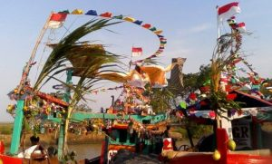
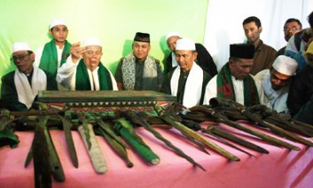
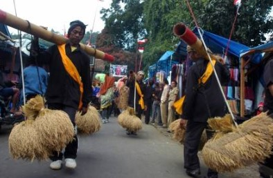
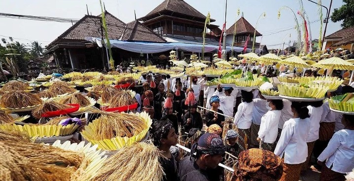
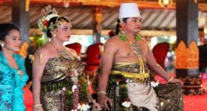
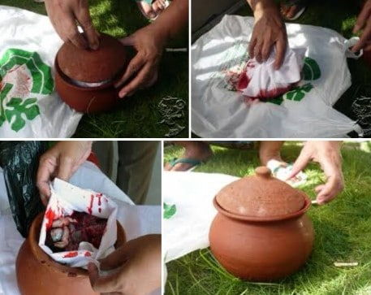
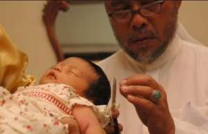
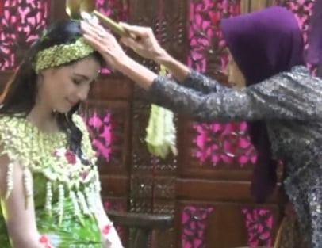

Alat Musik
Upacara Pesta Laut
Upacara pesta laut atau pesta bahari sering diadakan. Tempat yang sering dilakukan seperti di Pangandaran, Ciamis dan Pelabuhan Ratu, Sukabumi, maupun daerah-daerah pesisir lainnya di Jawa Barat seperti Indramayu dan Cirebon. Ketika pelaksanannya, perahu-perahu nelayan yang mengangkut sesajen dihiasi aksesoris warna-warni. Pada upacara nelayan juga membawa kepala kerbau berbungkus kain putih sebagai persembahan dan melemparkannya ke Bahari sebagai simbol hadiah kepada penguasa lautan dan penolak bala. Upacara ini diadakan setiap setahun sekali ini ditujukan sebagai ungkapan rasa syukur dan memohon keselamatan saat melaut.
Upacara Ngalungsur Pusaka
Upacara Ngalungsur Pusaka ini umumnya dilakukan di daerah Garut. Upacara adat ini dipimpin oleh seorang juru kunci (kuncen) yang merupakan bukti bahwa mereka masih melestarikan dan melaksanakan tradisi leluhurnya juga mensosialisasikan keberadaan benda-benda pusaka peninggalan Sunan Rohmat Suci. Pada upacara ini, peserta upacara dapat menyaksikan proses pencucian benda-benda pusaka itu. Benda-benda pusaka tadi merupakan sebuah simbol konduite juga perjuangan Sunan Rohmat Kudus dalam memperjuangkan Islam sewaktu beliau hidup.
Upacara Ngalaksa
Upacara adat Jawa Barat yang berhubungan dengan pertanian berikutnya ialah bernama Ngalaksa. Upacara Ngalaksa ini lazim ditemui di daerah Ranca Kalong, Sumedang. Kebiasaan ini dilakukan dengan membawa padi ke lumbung dengan memakai rengkong (bambu panjang berlubang buat membawa beras). Sekilas sangat mirip dengan upacara yang juga dikenal dengan sebutan Seren Taun . Bulan Juni jadi pilihan waktu untuk pelaksanaan Ngalaksa. Salah satu keunikannya ialah terletak dibunyi musik yang memiliki ritme sama dengan orang yang sedang berjalan, yaitu pada rengkong yang digoyang – goyang. Seni tradisional Tarawangsa digelar selama seminggu jalannya upacara ini. Upacara Ngalaksa ditujukan sebagai wujud rasa syukur kepada Tuhan atas keberhasilan panen daerah pertanian.
Upacara Seren Taun
Upacara Seren Taun ialah sebuah upacara yang intinya mengangkut padi dari sawah ke lumbung dengan menggunakan rengkong (pikulan khas yang terbuat dari bambu) dan diiringi tetabuhan musik khas tradisional. Upacara ini masih dapat kita temui di Cigugur, Kuningan dan Sirnarasa Cisolok, Sukabumi. Seren Taun tujuannya sebagai ungkapan syukur terhadap Tuhan Yang Maha Esa, sebab keberhasilan panen dan permohonan hasil pertanian yang lebih baik di masa mendatang. Karakteristik khas upacara ini ada di prosesi laporan segala hasil tani yang sudah dicapai buat dapat dinikmati para pejabat yang menghadiri upacara ini. Prosesi ini dinamakan Seba.
Upacara Pernikahan
Ada berbagai macam upacara dalam prosesi adat pernikahan, yaitu upacara yang diadakan pra akad nikah dan yang diadakan pasaca akad nikah. Upacara yang dilakukan sebelum akad nikah yaitu: Neundeun omong, Ngalamar, Seserahan, dan Ngeuyeuk Seureuh. Lalu, upacara yang diadakan setelah akad nikah ialah: Mumunjungan, Sawer, Nincak Endog, Buka pintu, dan Huap Lingkung. Neundeun Omong merupakan kunjungan orang tua pria kepada orang tua perempuan guna bersilaturahmi dan memberi pesan kalau si perempuan akan dilamar oleh si pria. Ngalamar ialah kunjungan orang tua pria buat meminang perempuan, dan membahas rencana pernikahan mereka. Sedangkan Seserahan ialah proses menyerahkan si pria calon pengantin kepada calon mertuanya buat dinikahkan kepada si perempuan.
Upacara Tembuni
Berikut ini adalah upacara adat tradisional Jawa Barat yang bernama Tembuni. Kebiasaan Tembuni ialah merupakan upacara adat Sunda untuk memelihara placenta bayi atau ari – ari dimana placenta sang bayi harus dirawat dengan sebaik – baiknya. Placenta bayi ini dipelihara dengan cara memasukkannya ke dalam kain putih dengan disertai garam, gula merah, dan asam untuk kemudian dikubur di dalam tanah di pekarangan rumah si ibu hamil. Adapun tujuan dari upacara Tembuni ini menurrut warga lokal ialah merupakan agar si anak kedepannya bisa tumbuh dan berkembang menjadi anak yang bahagia tanpa ada sebuah kemalangan apapun dalam kehidupannya kelak.
Upacara Akekah
Jika di Jawa adalah Akekah, maka di Kota Bandung ada Ekah. Ekah ialah adat khas Sunda dimana usai kelahiran bayi pada usia 7 hari atau 14 hari atau 21 hari, maka orang tua wajib menyembelih kambing untuk menebus jiwa sang bayi dari Tuhan Yang Maha Esa. Jika anaknya perempuan (wanita) maka kambingnya harus ada 1 ekor dan jika anaknya laki – laki maka kambingnya harus ada 2 ekor. Ekah sendiri ini ditujukan untuk mensucikan jiwa sang bayi lahir dan bathin sekaligus sebagai tanda bersyukur kepada Tuhan Yang Maha Esa atas karunia pemberian keturunan kepada kita sebagai hamba-Nya.
Upacara Gusaran

Upacara Gusaran yang termasuk upacara adat tradisional Jawa Barat. Gusaran merupakan proses upacara tradisional dimana ditujukan kepada anak perempuan dengan cara meratakan gigi anak perempuan dengan alat khusus. Pada Upacara Gusaran ini si anak perempuan juga akan ditindik atau dilubangi telinganya kemudian akan dikenakan anting- anting di daun telinganya. Kebiasaan Gusaran ini memang bertujuan untuk mempercantik diri sang anak perempuan dimana dirinya diharapkan nantinya akan tumbuh dan berkembang menjadi sosok yang penuh dengan kecantikan luar dalam.
Upacara Tingkepan
Upacara adat tradisional Jawa Barat yang berhubungan dengan kehidupan manusia lainnya yaitu Tingkepan. Kebiasaan adat ini diadakan saat seorang ibu yang sedang mengandung tujuh bulan. Tingkepan sedniri berasal dari kata Tingkeb yang artinya tertutup. Maksudnya, si ibu tidak boleh bercampur dengan suaminya selama 40 hari setelah persalinan dan sebagai tanda supaya si ibu mengurangi porsi kerjanya, sebab sedang mengandung besar. Pengajian, peralatan buat memandikan ibu hamil, dan rujak kanistren yang terdiri dari 7 macam buah disiapkan diadakan untuk upacara ini. Ketika pelaksanannya, si ibu hamil dimandikan oleh 7 orang keluarga dekat dengan air bunga 7 rupa. Lalu, pada guyuran terakhir dimasukan seekor belut sampai mengenai perut ibu hamil ini. Apa tujuan dari Upacara Tingkepan ini? Menurut informasi yang kami dapatkan, upacara adat ini bertujuan untuk memohon si bayi dalam kandungan dan si ibu yang hendak melahirkan.